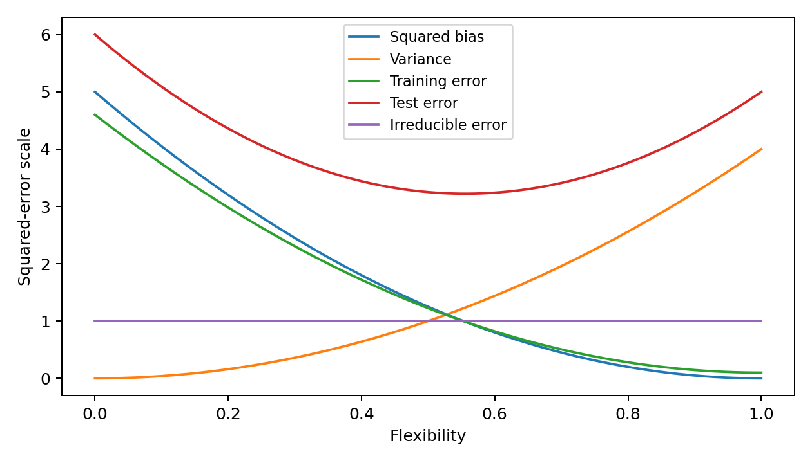

<!doctype html><html lang="zh-CN"><meta charset="utf-8"><meta name="viewport" content="width=device-width,initial-scale=1"><title>2.4-19</title><link rel="stylesheet" href="../../assets/style.css"><header><div><a href="../../textbook-exercises.html">教材章末习题目录</a><a href="../../index.html">全书代码目录</a></div></header><main><h1>代码 2.4-19 · 五条曲线的教学示意图</h1><p>按Notebook顺序运行。后续代码依赖前面定义的变量。真实数据来自教材官网。</p><button id="copy">复制整块代码</button><textarea id="code" readonly rows="15">training_error = 4.5 * (1 - flexibility) ** 2 + 0.1
curves = {&quot;Squared bias&quot;: bias_squared,
          &quot;Variance&quot;: variance, &quot;Training error&quot;: training_error,
          &quot;Test error&quot;: test_error, &quot;Irreducible error&quot;: irreducible}
fig, ax = plt.subplots(figsize=(7, 4))
for label, values in curves.items():
    ax.plot(flexibility, values, label=label)
ax.set(xlabel=&quot;Flexibility&quot;, ylabel=&quot;Squared-error scale&quot;)
ax.legend(fontsize=9)
fig.tight_layout()
for suffix in [&quot;pdf&quot;, &quot;png&quot;]:
    fig.savefig(image_dir / f&quot;241-curves.{suffix}&quot;, dpi=180)
display(fig)
plt.close(fig)
</textarea><p id="status" role="status"></p><p><a href="../../notebooks/ch02/2.4-textbook-exercises.ipynb" download>下载已执行Notebook</a> · <a href="../../textbook-exercises.html">返回项目目录</a></p></main><script src="../../assets/copy.js" defer></script></html>